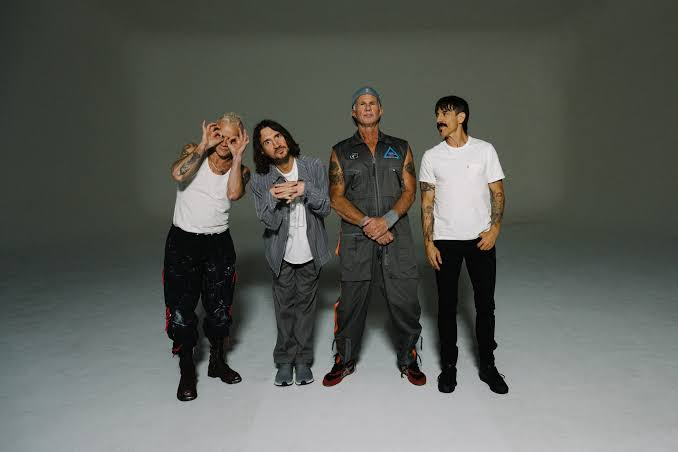

A banda foi formada em 1983 na cidade de Los Angeles, Califórnia, EUA. Sendo formada inicialmente por Flea , Hillel Slovak e Jack Irons . A banda desde o início já possuia um admirador sendo ele Anthony Kiedis , que, após um tempo foi aceito como vocalista na banda. O primeiro nome da banda foi "Tony Flow and the Miracoulous Masters of Mayhem" , porém, após o grande sucesso em uma perfomance na abertura de um show, o grupo optou por trocar o nome por "The Red Hot Chili Peppers" , que viria se tornar "Red Hot Chili Peppers"futuramente.
O primeiro albúm gravado em estúdio o "Red Hot Chilli Peppers" foi uma grande decepção para a banda, saindo em agosto de 1984 sem muita atenção. O segundo álbum da banda saiu em setembro do ano seguinte, conhecido como "Freaky Styley", fez a banda finalmente pisar em palcos europeus. Impulsionados pelo suceso, no final de 1986 o grupo começou a passar por um grande problema com relação as drogas, Anthony Kiedis havia se afundado nos entorpecentes, chegando ao ponto mais baixo de sua vida passando a consumir drogas por baixo de uma ponte no centro de Los Angeles , isso futuramente o incentivaria a escrever um poema, apelidado de "Under The Bridge". Nessa época Kiedis realizou a pior performance de sua vida, sendo convidado a se retirar da banda para a reabilitação. Após a reabilitação do volcalista, no verão de 1986 inicia a preparção do terceiro álbum o "The Uplift Mofo Party Plan" que ficou no 143° lugar nas paradas.
No começo de 1988 os Peppers vinham cada vez mais crescendo, com isso Hillel se entorpecia cada vez mais. E em 27 de junho, Hillel é encontrado morto por overdose de heroína, ele tinha apenas 26 anos. Com a morte do guitarrista, Jack Irons sai da banda, Flea começa a trabalhar com projetos paralelos e Kiedis que havia retornado a consumir drogas, se isola para tentar se livrar completamente das drogas, parecia o fim da banda.
|
|
Em homenagem ao falecido guitarrista, Flea e Anthony decidem reconstruir a banda. Então contrataram D.H Peligro como baterista e DeWayne McKnight como guitarrista, o qual não ficou por muito tempo devido conflitos com Flea e Kiedis. Após mais algumas procuras, acabam por achar um novo guitarrista, que era um grande fã da banda assim como de Jimi Hendrix, seu nome é John Frusciante. Durante os primeiros shows com a banda os fãs acreditavam que John era o clone de Slovak, já que esse era seu ídolo. Devido aos problemas de Peligro com álcool e drogas, a banda optou por demiti-lo, e depois de uma grande procura a banda contrata Chad Smith como seu novo baterista.
Então em fevereiro de 1989 os Peppers recomeçam, Anthony e John se tornam grandes amigos e a banda começa a se dar muito bem. Em agosto de 1989 Mother's Milk e lançado, o albúm continha 11 músicas e o cover da música "Higher Ground" de Stevie Wonder e "Fire" de Jimi Hendrix. Sendo o primeiro albúm de grande sucesso da banda, vendendo mais de 5 milhões de cópias no mundo inteiro. Após o grande sucesso Flea e Kiedis começaram a considerar a lançar um álbum duplo, porém não acreditavam que a EMI estava fazendo um bom trabalho na divulgação. Então largaram o contrato com a gravadora e fecharam com a Warner.
|
|
| NOME DO ÁLBUM | NÚMERO DE VENDAS | DATA DE LANÇAMENTO | PRODUÇÃO |
|---|---|---|---|
| Californication | 35.000.000 | 8 de junho de 1999 | Rick Rubin |
| By the Way | 21.000.000 | 9 de julho de 2002 | Rick Rubin |
| Blood Sugar Sex Magik | 17.000.000 | 24 de setembro de 1991 | Rick Rubin |
| Stadium Arcadium | 16.000.000 | 5 de maio de 2006 | Rick Rubin |
| Mother's Milk | 6.000.000 | 16 de agosto de 1989 | Michael Beinhorn |
|  |